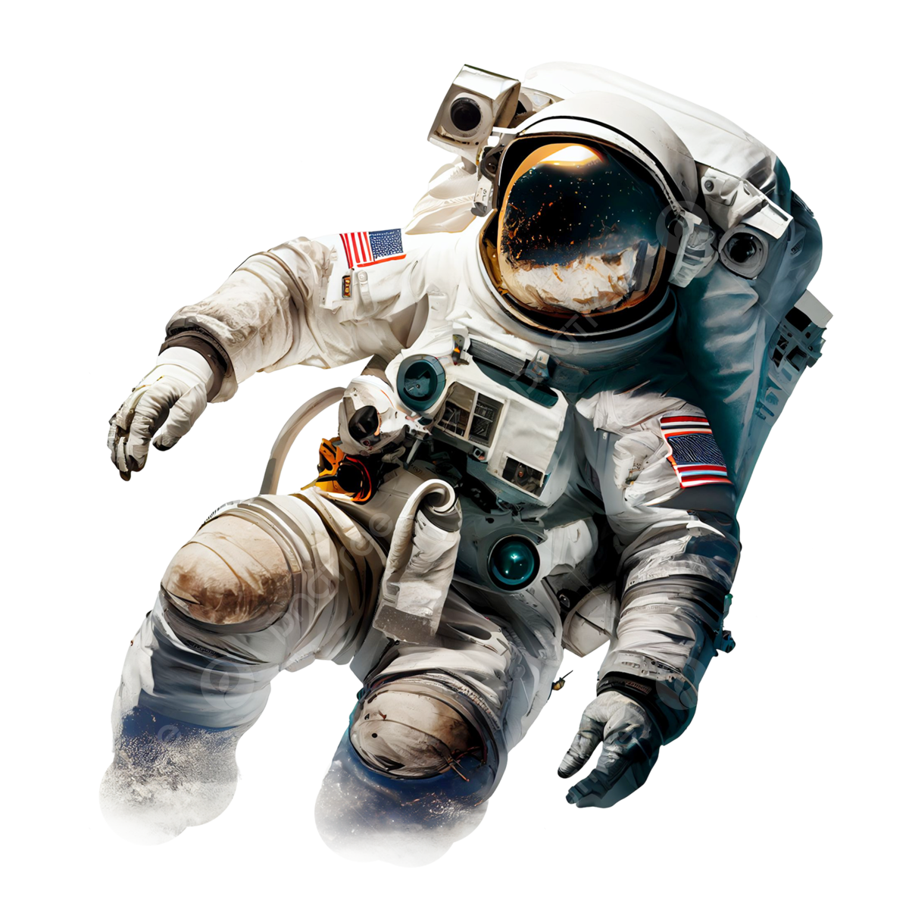

Clima e Terra!
De forma resumida, podemos dizer que a NASA é uma agência governamental que atua com a pesquisa e desenvolvimento de veículos e atividades para a exploração do espaço. Para isso, a instituição conta com quatro grandes diretorias de missão. Uma delas é a de Pesquisa e Missões em Aeronáutica, voltada para o desenvolvimento de tecnologias de aviação avançadas.
A sede da NASA fica em Washington, nos Estados Unidos, e a agência espacial conta com nove centros que se somam a outras 20 instituições, como o Laboratório de Propulsão a Jato; os demais são instalações de testes e pesquisas espalhadas pelo país. Algumas das instalações mais famosas são o Centro Espacial Kennedy, em Cabo Canaveral, na Flórida, de onde são lançadas missões tripuladas, e o centro espacial Johnson em Houston, no Texas, onde é feito o controle das missões tripuladas. É por isso que durante o incidente com a Apollo 13, em 1970, o comandante da missão, Jim Lovell, disse a célebre frase: "Houston, we've had a problem". (Houston, tivemos um problema)